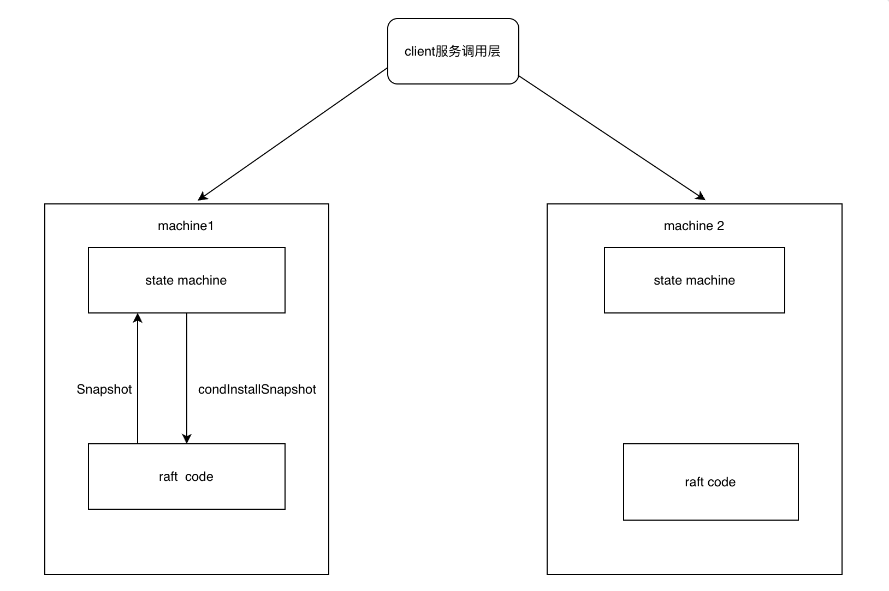

实验背景
- 在大部分分布式场景中，往往采用的是多个不同的节点共同运作一个系统，大部分采用的是一主多从的方案，即一个主节点（Leader），多个从节点（Follow）节点。主节点承担着响应客户端请求的职责，主节点需要将数据备份给从节点，防止数据丢失等。然而，集群的运作往往意味着可能出现的不一致问题，本次我们研究讨论的raft算法就是为了解决分布式场景下的一致性问题。
- raft算法是一种一致性算法，相对于比较经典的分布式算法Paxos算法，raft算法比较简单，相对更加容易理解，同时实现成本比Raft算法更低。
- 实验详细说明参照：https://pdos.csail.mit.edu/6.824/labs/lab-raft.html
- 实现代码: https://github.com/Peterliang233/MIT-6.824/tree/main
实验原理
先给出raft算法的架构图
- (1)客户端向服务端发送请求，在分布式环境下规定只有leader节点可以用来处理客户端的请求
- (2)leader节点处理请求，同时写入日志
- (3)leader节点向当前的follow节点写入自己刚才写的日志
- (4)follow节点将写入情况返回给leader节点
- (5)在有超过一半的follow节点都确认已经同步了日志之后，leader节点向client返回确认的ack
在进行实验之前，我们需要了解以下变量的含义。
- Term，任期。raft算法将时间分为若干个时间片，也就是一个一个的时间周期，所有的节点都在一个时间周期内运行。同时term在节点选举的时候也可以用来记录当前的节点的状态，在同一个时间周期内，term越大说明当前节点的数据更新。这里的term是递增的，一个时间周期内就是一个任期，在这个任期里面可以执行多条命令。
- Index日志索引。系统的操作都可以抽象成一条一条系统命令，可以当作系统日志写入到文件里面。为了标识每一条日志，我们需要引入一个日志索引的概念，每个节点都有一个日志集，可以理解为一个数组，这个数组的元素是一个结构体，结构体的组成有这条日志产生时的term（任期ID）以及这条日志的内容。
- raft算法的集群的节点一般有奇数个组成，状态的划分为leader，follow以及candidate。
- leader节点负责处理客户端的所有的请求，同时将日志通过广播同步给其余的非leader节点。
- follow只处理来自leader节点和candidate节点的所有请求。
- candidate用来作为leader的候选人发起选举。
- 主要的函数有RequestVote和AppendEntries这两个， 都是通过rpc接口进行调用的
- RequestVote函数：用于在candidate选举期间向其他follow请求选票。
- AppendEntries函数：当leader接收到来自客户端的请求的时候，作为leader需要将这条命令的相关日志集通过调用AppendEntries函数发送给每个follow节点。
- 有一个全局的config来控制整个raft算法的运行以及初始化的一些配置。这个config包括了服务节点的个数，一个共用的网络，时间戳等等。
实验过程
2A测试
- 测试项目启动的时候是否会正常选举，是否只有一个leader节点产生。
- 测试在leader选举出来之后，leader故障或者其他某一个节点故障是否会重新进行选举。
- 测试某一些节点同时故障的时候能否正常进行选举。
实现过程
- 在实验启动的时候，我们首先需要初始化各个节点的状态，初始的状态都是Follow，在一段时间内如果没有收到来自leader的心跳检测，那么就会把自己变成一个候选者去竞争成为leader。
- 这个实现过程的核心主要是超时选举和超时发起心跳检查。这里的设计大概如下
1
2
3
4
5
6
7
8
9
10
11
12
13
14
15
16
17
18
19
20
21
22
23
24
25
26
27
28
29
30
31
32
33
34
35
36
37
38// timeout start to election
func (rf *Raft) timerElection() {
for {
rf.mu.Lock()
if rf.state != Leader {
timeElapsed := (time.Now().UnixNano() - rf.lastResetElectionTimer) / time.Hour.Milliseconds()
if timeElapsed > rf.timeoutElection {
// 超时执行选举
DPrintf("[timerElection] server %v timeout, start to elect, state: %v, currentTerm: %v\n", rf.me, rf.state, rf.currentTerm)
rf.timerElectionChan <- true
}
}
rf.mu.Unlock()
// 为了保证这些RPC协程都执行完成
time.Sleep(time.Millisecond * 10)
}
}
func (rf *Raft) timerHeartbeat() {
for {
rf.mu.Lock()
if rf.state == Leader {
timeElapsed := (time.Now().UnixNano() - rf.lastResetHeartbeatTimer) / time.Hour.Milliseconds()
if timeElapsed > rf.timeoutHeartbeat {
DPrintf("[timerHeartbeat] raft %v heartbeat timeout, start broadcast\n", rf.me)
rf.timerHeartbeatChan <- true
}
}
rf.mu.Unlock()
time.Sleep(time.Millisecond * 10)
}
} - 我们可以看到，就是使用一个for循环周期性检查是否达到了超时时间，判断的依据就是当前的时间戳和最新记录的一次时间戳的时间差和我们设定的超时时间进行比较。同时我们使用channel进行通信，如果可以进行选举或者心跳检测的时候就发送一个信号通知执行对应的操作。
- 这里需要注意为了保证不会同时有多个节点开始变成候选者进行选举，我们的超时选举时间需要任意分布均匀。
- 对于两个RPC服务，我们需要有以下的逻辑判断
- RequestVote请求，需要对Term进行判断，如果请求方的term大于接受方或者已经投票了，那么就可以拒绝这个投票，反之则必须要投票。
- AppendEntries请求，同样也是对term进行讨论，需要保证follow的term不能领先于leader的term。
- 对于这两个请求，注意节点的身份的转变同时更新对应的变量，同时在合适的地方及时更新时间戳，相当于重置定时器。
- 对于更新leader选举的时间戳，当我们收到来自leader的心跳检查的时候，我们需要更新我们的日志选举时间，但是要注意这个地方如果当前的term大于请求参数的term，我们就可以认为这是一个非法的请求，我们这个时候不需要更新超时选举时间。
- 在开始发起选举的时候需要更新我们的选举时间。
- 在选举成功，成为leader的时候需要重置选举超时时间。
- 问题汇总
- 在测试2A部分的过程中，由于某些节点的disconnected下线，导致我们的部分协程里面调用RequestVote和AppendEntries这两个RPC服务的时候耗时非常久（似乎官方提供的代码并没有给每个RPC服务设置默认的超时时间）。由于我们的多协程使用了一个Mutex互斥锁来控制并发的，这个时候会导致两个节点会在调用某RPC接口的时候阻塞。由于两个节点可能需要互相调用，这个时候很容易导致出现死锁问题。问题的解决方法是在调用RPC服务之前不需要加锁，因为这个地方只是简单调用RPC接口，并不会对当前节点的某些变量进行读写操作，我们只需要在获得RPC调用结果之后进行加锁或者解锁的操作即可。这样就可以避免我们某两个协程由于RPC调用超时导致阻塞而造成死锁的问题了。
2B测试
- 在测试2A部分的过程中，由于某些节点的disconnected下线，导致我们的部分协程里面调用RequestVote和AppendEntries这两个RPC服务的时候耗时非常久（似乎官方提供的代码并没有给每个RPC服务设置默认的超时时间）。由于我们的多协程使用了一个Mutex互斥锁来控制并发的，这个时候会导致两个节点会在调用某RPC接口的时候阻塞。由于两个节点可能需要互相调用，这个时候很容易导致出现死锁问题。问题的解决方法是在调用RPC服务之前不需要加锁，因为这个地方只是简单调用RPC接口，并不会对当前节点的某些变量进行读写操作，我们只需要在获得RPC调用结果之后进行加锁或者解锁的操作即可。这样就可以避免我们某两个协程由于RPC调用超时导致阻塞而造成死锁的问题了。
- 2B测试部分主要测试的是我们的日志是否可以在任何情况下都可以同步给其余的各节点。
- 测试raft算法启动之后，模拟向Leader节点发送日志，日志是否可以正常同步到其他机器上面，使得日志保持一致，这个地方主要实现的是Start函数。
- 测试每条命令是否只发送给各个节点一次，这个测试点通过比较日志的总的字节数来判断每条日志是否只发送一次。
- 测试follow故障是否会影响正常的日志同步，正常情况下即使有一个follow节点故障，也可以正常处理请求。
- 测试leader故障是否会影响正常的日志同步。
实现过程
- 这里面涉及一个更新commitIndex的步骤，这里是Leader先通过给各个follow节点发送AppendEntries同步日志，然后在确保大多数节点都收到了这些entry的时候更新自己的commitIndex。在之后的心跳检测的时候，follow节点根据leader传过来的LeaderCommit来更新自己的commitIndex，如此即可确保最后大家的commitIndex都保持一致。
- 同时这里还有一个lastApplied变量，这个看似是和commitIndex表示的是同一个状态，但是其实这个变量，对于leader节点是在确保日志同步到到多数的follow节点之后对客户端（client）作出响应的时候更新的;对于follow节点，这个是在收到ApendEntries的时候在知道自身commitIndex落后于leader的commitIndex时候更新的。（这里有一个共同点是都是先更新commitIndex，然后在通过commitIndex来更新这个lastApplied变量的）。
- commitIndex和lastApplied这两个变量的关系是lastApplied记录了commitIndex的前一个状态，也就是在前一次我们的commitIndex到了哪个位置，如此我们就可以在这两个变量之间存在差值的情况下知道需要向client发送一个响应，确认自己收到了哪些日志。
- 由于节点故障的不确定性，某一个节点成为leader的时候可能和其他节点存在多数不同的情况，导致我们在进行一次AppendEntries的时候可能会失败，所以我们需要增加重试机制，我们需要找到leader和该节点最开始的矛盾点位置。这里有一种机制是逐个往前面找，直到找到最开始的矛盾位置所在的索引。
- 这个部分主要是先的就是一个日志同步的问题，就是leader节点在确认集群内大多数的节点都已经同步了命令之后，会给client返回一个响应，同时leader会在之后的广播中同步这一消息，非leader节点通过leader的请求参数判断是否可以提交当前的日志。
2C测试
- 由于在集群中的每个节点可能出现不同情况的故障，所以我们需要及时将我们当前节点的某些状态及时进行快照处理，以便在该节点下次重启的时候恢复之前的状态。在实际中我们一般是将数据持久化到磁盘里面，但是在这个实验中，我们只需要调用代码中提供的persist()和readPersist()两个进行替代，分别替代的是将数据持久化到磁盘和从磁盘中读取最新的快照。
- 同时我们还需要优化日志同步部分，2B测试中如果出现leader和某些节点日志不同步的时候，我们的最新的日志索引会递减一个位置，然后执行重试操作，本次我们还需要优化这个地方。
实现过程
- 实现快照部分，根据论文我们可以知道我们只需要持久化raft的三个属性，分别是currentTerm，voteFor以及log[]。我们看程序中哪些地方会改变以上三个变量的状态，改变之后我们立刻调用persist()函数即可。
- 日志同步部分，另一种高效的方法是在我们每次RPC调用之后尽可能往前找到可能的矛盾点所在的索引。找到可能的那个矛盾点之后，我们通过RPC的返回参数返回给leader，这样leader对PrevLogIndex做一个调整，如此我们可以尽快地找到最开始的矛盾点。
- 核心代码如下
1
2
3
4
5
6
7
8
9
10
11
12
13
14
15
16
17
18
19
20
21// Reply false if log doesn't contain an entry at prevLogIndex whose term matches prevLogTerm
// 需要比较前一条日志的索引和term，需要保证有这个索引和term都可以对应上，这样保证了所有的日志都是同步了
if args.PrevLogIndex >= len(rf.log) || rf.log[args.PrevLogIndex].Term != args.PrevLogTerm {
DPrintf("[AppendEntries] server %v reject %v append,prevLogIndex and prevLogTerm conflict,"+
" len(rf.log): %v, args.PrevLogIndex: %v, args.PrevLogTerm: %v\n",
rf.me, args.LeaderId, len(rf.log), args.PrevLogIndex, args.PrevLogTerm)
reply.Term = rf.currentTerm
reply.Success = false
// 以下操作是为了尽可能尽快找到矛盾点
if len(rf.log) <= args.PrevLogIndex {
reply.ConflictIndex = len(rf.log)
} else {
// 无需一步一步的递减索引，可以直接找到当前term的最开始的索引进行重试，虽然不一定是刚好的矛盾点，但是却可以大幅度缩短重试次数
for i := args.PrevLogIndex; i >= 0; i-- {
if rf.log[i].Term != rf.log[i-1].Term {
reply.ConflictIndex = i
break
}
}
}
- 核心代码如下
2D测试
- 由于raft集群运行的时间可能很长，所以会产生大量的日志，当我们的节点因为故障重新启动的时候同步之前的状态需要很长的时间，所以我们需要对日志进行压缩处理。
- 对于已经应用到状态机的日志，我们不需要在集群中进行保留了，直接丢弃即可。但是如果有一部分的日志还未同步到其余的follow节点就已经快照了，那么当我们的leader给其余的follow同步这个日志的时候如果其中部分日志已经被快照了，那么就应该将这个日志的快照传送给follow节点。
- 这里面涉及InstallSnapShot以及CondInstallSnapshot两个函数，大概的调用过程如下
 - 在leader调用InstallSnapshot RPC接口的时候，follow会将收到的snapshot通过applyCh发送给上层的服务，这个时候follow没有持久化这个snapshot，在之后的调用中，上层的服务会调用condInstallSnapshot这个函数，询问raft是否安装了这个snapshot，如果在这段时间里，raft没有因为收到applyEntries而更新这个commitIndex，使得超过了压缩的这段日志，那么就将这段snapshot持久化。
- 在2D测试中，我们调用make_config函数里面调用的不是之前的applier,而是用于处理快照的appplierSnap，这个需要注意一下。它的作用是监听applyCh，如果这个通道收到了消息，那么就执行CondInstallSnapshot这个方法。
实现过程
- 在实际测试过程中，发现在集群的某一个节点通过ApplyCh发送消息给上层service的时候出现了阻塞的情况，分析之后发现是上层service会调用snapShot函数，这个地方会抢占锁，而这个锁会锁住applyCh这个通道，但是applyEnties这个函数也会抢占锁，所以导致了这两个协程时间的死锁问题，程序卡死。解决的办法就是发送消息给ApplyCh这个部分我们单独给它开一个协程，这样就不需要锁了，避免了我们上面所说的死锁问题了。
- 但是上面的解决方案会有在极端情况下有问题，当我们在遍历日志向上层service发送日志的时候，这个时候我们是暂时释放了锁，但是假如这个时候snapshot这个方法拿到了锁，执行了snapshot快照操作，此时我们本应该执行applyEntries的日志就被快照了，会出现集群同步日志不一致的问题。解决的方法就是在snapshot函数中加一个限制条件index > rf.lastApplied的时候直接返回，不执行snapshot操作即可，这很好理解，如果压缩的日志包含了当前节点还未向上层service同步的日志，那么这是不行的。
- 目前这个部分遗留了一些问题，就是在2D测试的第三个用例开始会出现超时的情况，个人猜测这个部分出现错误的原因是集群在disconnect的时候还是在运转。建议之后的排查从这个方面入手。